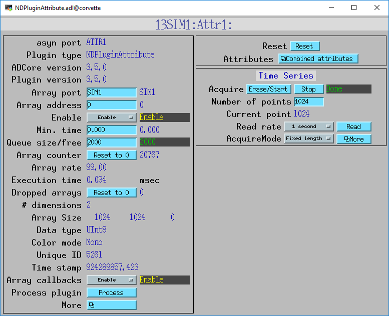
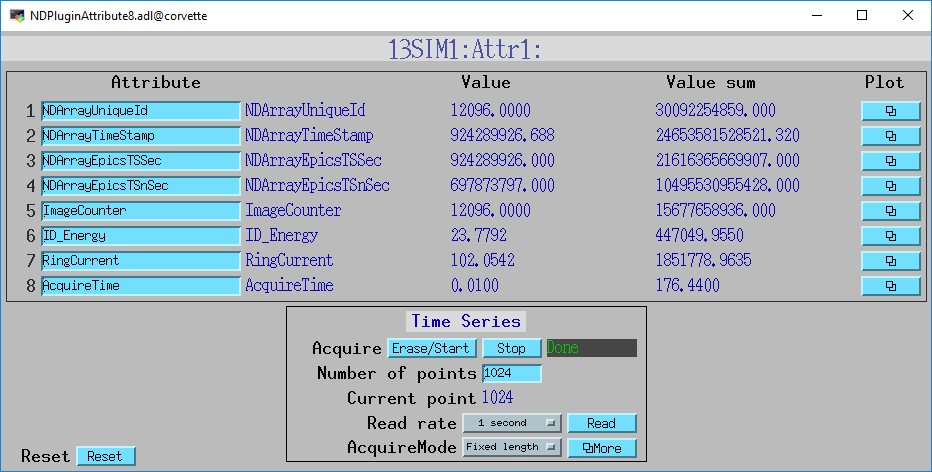
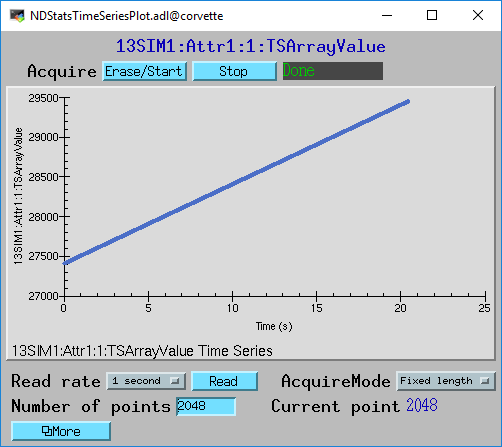
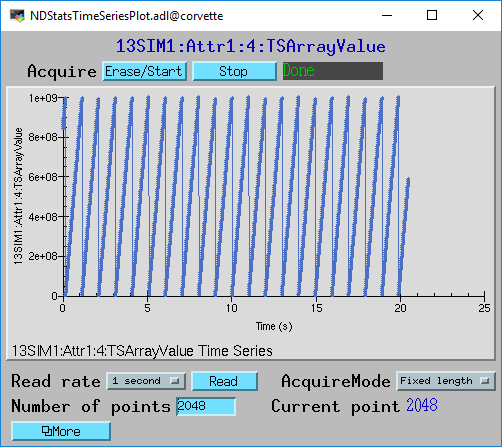

NDPluginAttribute
Overview
This plugin provides the ability to extract an NDArray attributes and publish their values over channel access. It also publishes arrays of the attribute values, and the integrated values.
Each NDPluginAttribute plugin supports any number of attributes, each publishing the last attribute value, the sum of that attribute value since the last reset, and a time-series array of the attribute value. The number of attributes is defined when the NDPluginAttribute is created in the startup script. Each attribute is referenced by its asyn “addr” address field.
In addition to the actual NDAttributes attached to the NDArray this
plugin supports 4 virtual attributes. These correspond to properties of
all NDArray objects. These virtual attribute names can use used in the
$(P)$(R)AttrName record to select that NDArray property.
Virtual attribute name |
NDArray property |
|---|---|
NDArrayUniqueId |
NDArray.uniqueId |
NDArrayTimeStamp |
NDArray.timeStamp |
NDArrayEpicsTSSec |
NDArray.epicsTS.secPastEpoch |
NDArrayEpicsTSnSec |
NDArray.epicsTS.nsec |
The time-series arrays use the same PVs to control acquisition as the NDPluginStats plugin. Acquisition of arrays for all attributes are started an stopped at the same time.
NDPluginAttribute inherits from NDPluginDriver. The NDPluginAttribute class documentation describes this class in detail.
Note
The plugin only supports epicsFloat64 type NDAttribute data at the moment. Any data of other numeric types will be converted. String attributes are not supported.
NDPluginAttribute defines the following parameters. It also implements all of the standard plugin parameters from NDPluginDriver
Parameter Definitions in NDPluginAttribute.h and EPICS Record Definitions in NDAttribute.template |
||||||
|---|---|---|---|---|---|---|
Parameter index variable |
asyn interface |
Access |
Description |
drvInfo string |
EPICS record name |
EPICS record type |
NDPluginAttribute, Reset |
asynInt32 |
r/w |
Reset the plugin data. This zeros the array, and resets the value sum and value to zero. |
ATTR_RESET |
$(P)$(R)Reset |
bo |
Time-Series data |
||||||
The time series is implemented by loading an instance of the ::doc:NDPluginTimeSeries
plugin for each NDPluginAttribute plugin, and the time series control
uses records in NDTimeSeries.template. That documentation should be consulted for
an explanation of these records. The prefix and record name macro for the time-series
plugin records from NDTimeSeries.template is $(P)$(R)TS:. |
||||||
NDPluginTimeSeries, TSTimeSeries |
asynFloat64Array |
r/o |
The time series data arrays of the basic statistics and centroid and sigma statistics described above. |
TS_TIME_SERIES |
$(P)$(R)TSArrayValue |
waveform |
Parameter Definitions in NDPluginAttribute.h and EPICS Record Definitions in NDAttributeN.template |
||||||
NDPluginAttributeAttrName |
asynOctet |
r/w |
The name of the NDAttribute parameter that we want to publish. This can be modified at runtime. |
ATTR_ATTRNAME |
$(P)$(R)AttrName , $(P)$(R)AttrName_RBV |
waveform |
NDPluginAttributeVal |
asynFloat64 |
r/o |
Attribute value |
ATTR_VAL |
$(P)$(R)Value_RBV |
ai |
NDPluginAttributeValSum |
asynFloat64 |
r/o |
Sum of the attribute value, since the last reset. |
ATTR_VAL_SUM |
$(P)$(R)ValueSum_RBV |
ai |
Configuration
The NDPluginAttribute plugin is created with the NDAttrConfigure
command, either from C/C++ or from the EPICS IOC shell.
NDAttrConfigure(const char *portName, int queueSize, int blockingCallbacks,
const char *NDArrayPort, int NDArrayAddr, int maxAttributes,
int maxBuffers, size_t maxMemory, int priority, int stackSize)
All arguments except maxAttributes are common to all plugins. maxAttributes defines the maximum number of attributes that this plugin will support.
For details on the meaning of the parameters to this function refer to
the detailed documentation on the NDAttrConfigure function in the
NDPluginAttribute.cpp
documentation
and in the documentation for the constructor for the NDPluginAttribute
class.
Screen shots
The following is the MEDM screen that provides access to the parameters in NDPluginDriver.h and NDPluginAttribute.h through records in NDPluginBase.template and NDAttribute.template.
{kind=link}
The following is the MEDM screen that provides control and display of the parameters for 8 attributes.
{kind=link}
The following is the MEDM screen that displays the time-series data for each attribute. The first screen shows a plot of NDArrayUniqueID and the second shows NDArrayEpicsTSnSec.
 {kind=link}
{kind=link}